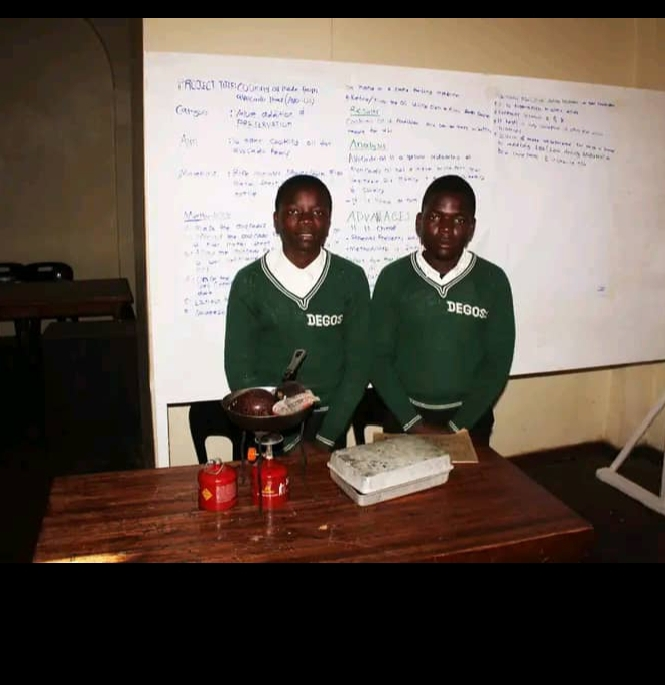
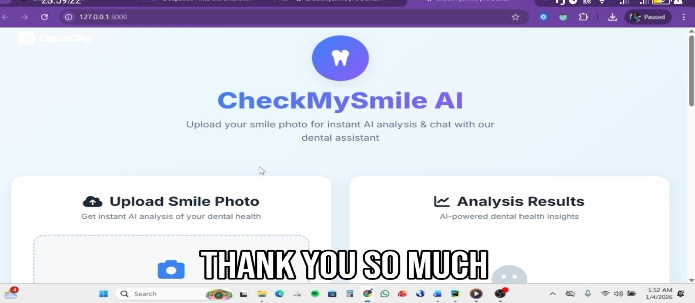
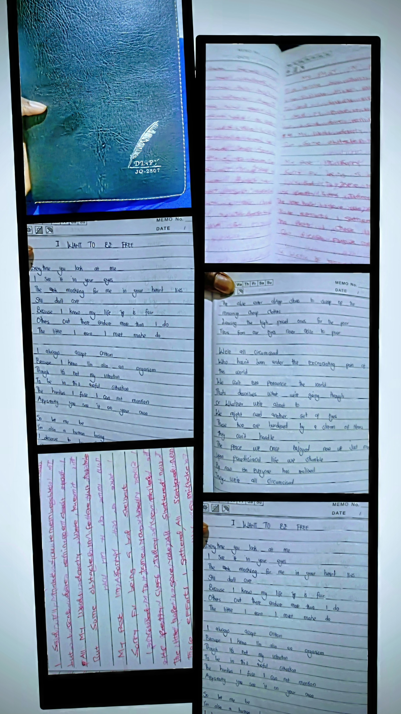

My Path
Innovation Journey
2021
Mini Bio-Digester
Built as Form 2 student at Dedza Secondary School.

2022
Avocado Oil Extraction
Experimental project exploring agricultural processing.

2023-24
Teaching & Mentorship
Student Teacher at Bright Future Private Secondary School.

2024
CheckMySmile
Founded dental awareness platform. Tested by medical students.

2025
KUHES Campus Connect
Student networking platform in development.
Ongoing
Healing Journal
20-page handwritten transformation work.
